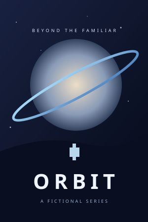
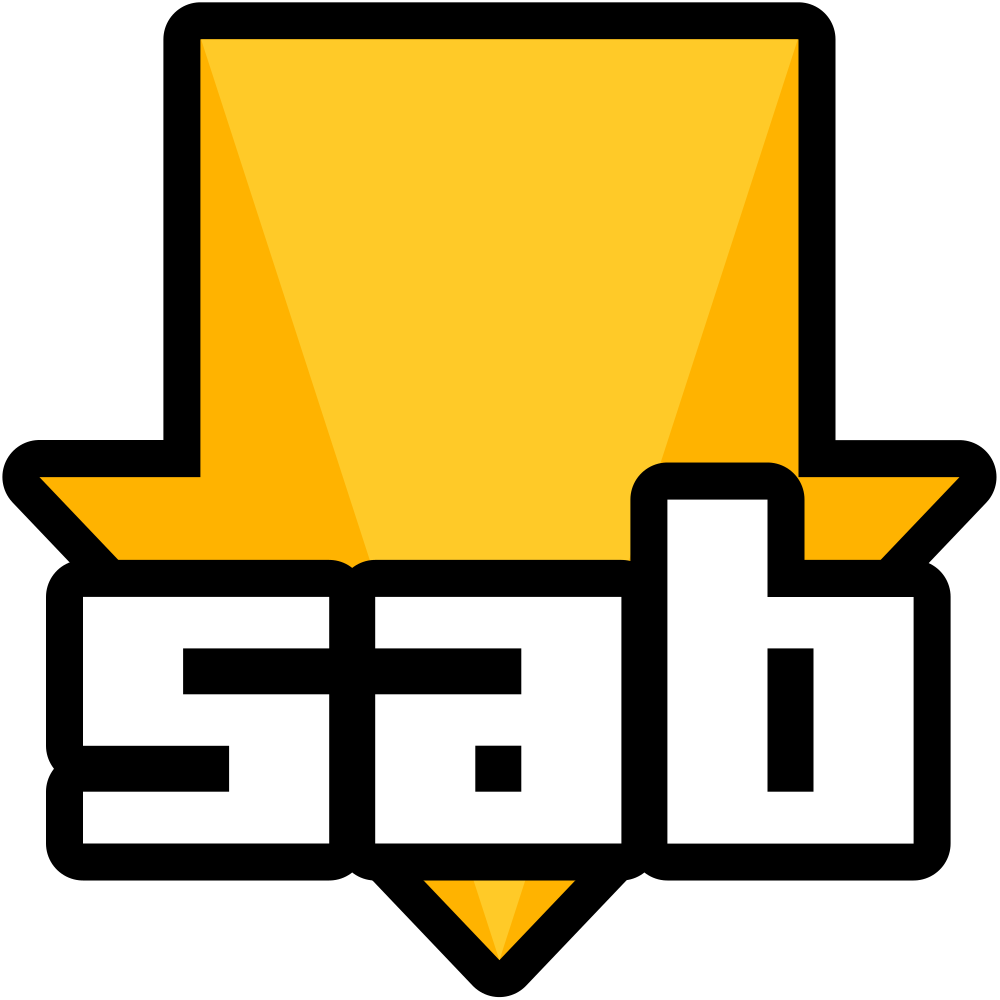

VOTRE SERVEUR. VOS MÉDIAS. VOS RÈGLES.
Votre serveur média complet.
Moins de réglages. Plus de cinéma.
Installez une fois, choisissez vos applications et laissez AIO relier les outils compatibles. Commencez avec l’assistant, puis configurez sauvegardes, mises à jour et options avancées selon vos besoins.

Interface réelle avec exemples fictifs : affiches, téléchargements et dates de sortie des épisodes et films.
Moins de gestion.
Plus de soirées cinéma.
Recherche

Aucun résultat. Essayez Orbit, Northbound ou The Last Light.
▦ Calendrier des sorties
Prochains épisodes et sorties de films
↓ Téléchargements
⌁ Serveur



Aperçu interactif · données fictives Aperçu uniquement · aucun changement sur votre serveur
Essayez : ouvrez Organiser les widgets, puis déplacez, agrandissez ou ajoutez une carte. Cette démo simplifiée n’est pas votre serveur.
DE L’INSTALLATION AU QUOTIDIEN
Simple pour débuter. De quoi évoluer.
Vous avez déjà un serveur média ? Consultez les guides avancés avant de modifier votre installation.
LE CATALOGUE
Vos outils préférés.
Un seul endroit pour les gérer.
Choisissez Découvrir, Mes apps ou une catégorie dans le menu. Ouvrir lance l’app ; son nom ou son icône affiche ses réglages.
Découvrir le tableau de bord →
MOINS D’EFFORT. PLUS DE CONTRÔLE.
Bien régler, une fois.
Les réglages sont groupés avec un champ de recherche. Profil et apparence sont dans Personnel, les connexions dans Connexions, les mises à jour et sauvegardes dans Maintenance.
Découvrir le tableau de bord →
ON VOUS ACCOMPAGNE
Commencez avec votre serveur.
Choisissez votre plateforme. Nous vous guidons étape par étape.
Unraid
Unraid ? Commencez par le modèle et le stockage SSD des téléchargements.
Synology
Un NAS Synology ? Installez Container Manager, puis créez un projet.
Docker
Docker sur un autre serveur ? Utilisez la configuration à un conteneur.
TrueNAS
TrueNAS SCALE ? Suivez la configuration d’une app personnalisée.
Vous débutez ? Par ici.
Inutile de connaître toutes les apps. Le guide explique les prérequis, où cliquer et le résultat attendu.
Lire le guide d’installation ↗FAQ
Bon à savoir.
Ai-je besoin de toutes les apps ?
Non. Commencez par un serveur média et les outils nécessaires. Ajoutez les autres plus tard via le catalogue.
Où vont mes films et séries ?
Sur votre serveur. Le SSD peut accélérer téléchargement et décompression ; la bibliothèque peut rester sur HDD.
Faut-il un VPN ou un domaine ?
Pas pour commencer à la maison. Vous pourrez les configurer plus tard.
Est-ce un vrai serveur dans mon navigateur ?
Non. Le tableau de bord est une démo avec des données fictives. Catalogue et Réglages montrent de vrais screenshots AIO. Rien ne se connecte à votre serveur.
Vos médias. Une gestion plus sereine.
Auto-hébergé. Open source. Vos outils média, réunis.
Commencer ↗ Voir sur GitHubFaire un don
🤖 L’IA écrit du code. Je le casse. On le répare ensemble.
Pas quelques euros de côté ? Laissez une étoile sur GitHub. Ça nourrit l’ego, et c’est presque aussi bien.